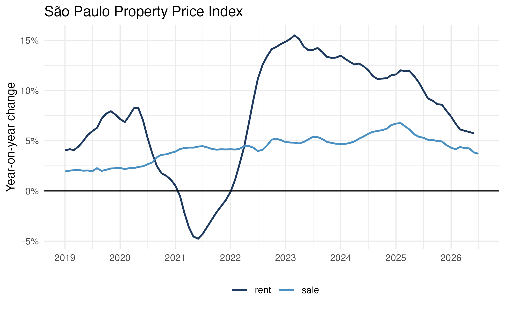
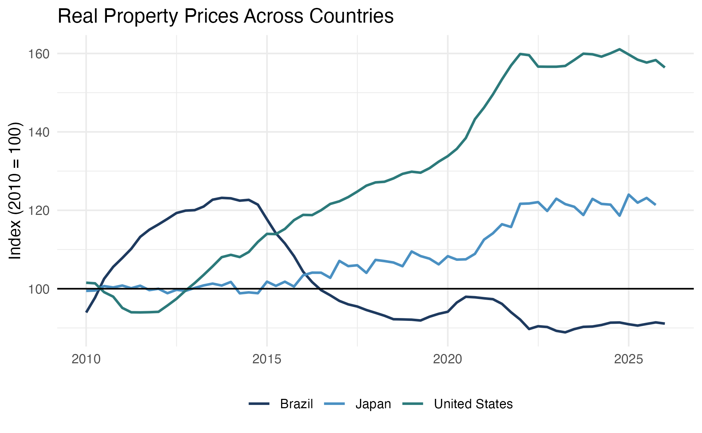

realestatebr aims to provide an unified interface to Brazilian real estate information, delivering data from different sources in a tidy format. The package is organized by source, with each source having multiple associated tables (datasets).
All datasets are returned as tibble objects. The package is centered around a key function: get_dataset(name, table) which retrieves any dataset by name.
Installation
# Install the development version from GitHub
# install.packages("remotes")
remotes::install_github("viniciusoike/realestatebr")Quick Start
There are two key functions in realestatebr: get_dataset() and list_datasets(). The former retrieves data, while the latter lists all available datasets. get_dataset() expects a name and a (optional) table argument. If no table is specified, the function returns the first available table.
library(realestatebr)
# Discover available datasets
datasets <- list_datasets()
# Get specific table
sbpe <- get_dataset(name = "abecip", table = "sbpe")
# Get property price indices
fipezap <- get_dataset("rppi", "fipezap")Available Datasets
The package acts as a convenient wrapper around public data sources. All data is provided in a tidy format in a tibble object. Datasets are updated weekly or monthly, depending on the source.
| Dataset | Source | Tables | Status |
|---|---|---|---|
abecip |
ABECIP |
sbpe, units, cgi
|
Active |
abrainc |
ABRAINC / FIPE |
indicator, radar, leading
|
Active |
bcb_realestate |
Banco Central do Brasil |
accounting, application, indices, sources, units
|
Active |
bcb_series |
Banco Central do Brasil |
price, credit, production, interest-rate, exchange, government, real-estate
|
Active |
fgv_ibre |
FGV IBRE | — | Active |
rppi |
FIPE/ZAP, IVGR, IGMI, IQA, IVAR, SECOVI-SP |
sale, rent, fipezap, ivgr, igmi, iqa, iqaiw, ivar, secovi_sp
|
Active |
rppi_bis |
Bank for International Settlements |
selected, detailed_monthly, detailed_quarterly
|
Active |
secovi |
SECOVI-SP |
condo, rent, launch, sale
|
Active |
Data Sources
The source parameter controls where data comes from.
# Auto (default): cache → GitHub → fresh
data <- get_dataset("abecip")
# User cache only (instant, offline)
data <- get_dataset("abecip", source = "cache")
# GitHub releases (requires piggyback package)
data <- get_dataset("abecip", source = "github")
# Fresh download from original source
data <- get_dataset("abecip", source = "fresh")Example: Property Price Indices
library(ggplot2)
library(realestatebr)
library(dplyr)
# Get FipeZap index
fipezap <- get_dataset("rppi", table = "fipezap")
# Brazil national index
rppi_spo <- fipezap |>
filter(
name_muni == "São Paulo",
market == "residential",
rooms == "total",
variable == "acum12m",
date >= as.Date("2019-01-01")
)
ggplot(rppi_spo, aes(x = date, y = value, color = rent_sale)) +
geom_line(lwd = 0.8) +
geom_hline(yintercept = 0) +
scale_x_date(date_breaks = "1 year", date_labels = "%Y") +
scale_y_continuous(labels = seq(-0.05, 0.15, by = 0.05) * 100, ) +
labs(
title = "Brazil Property Price Index",
x = NULL,
y = "YoY chg. (%)",
color = ""
) +
theme_minimal() +
theme(
legend.position = "bottom",
palette.colour.discrete = c("#1E3A5F", "#4A90C2", "#2C7A7B")
)

International Comparison
# Get BIS international data
bis <- get_dataset("rppi_bis")
# Compare countries
bis_compare <- bis |>
filter(
reference_area %in% c("Brazil", "United States", "Japan"),
is_nominal == FALSE,
unit == "Index, 2010 = 100",
date >= as.Date("2010-01-01")
)
ggplot(bis_compare, aes(x = date, y = value, color = reference_area)) +
geom_line(lwd = 0.8) +
geom_hline(yintercept = 100) +
labs(
title = "Real Property Prices - International",
x = NULL,
y = "Index (2010 = 100)",
color = ""
) +
theme_minimal() +
theme(
legend.position = "bottom",
palette.colour.discrete = c("#1E3A5F", "#4A90C2", "#2C7A7B")
)
